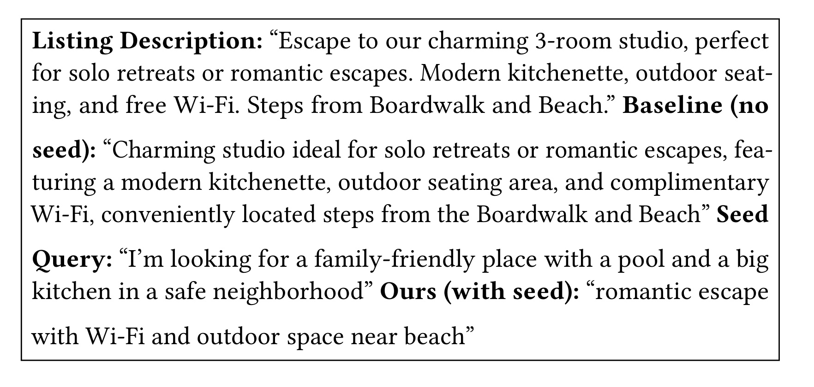
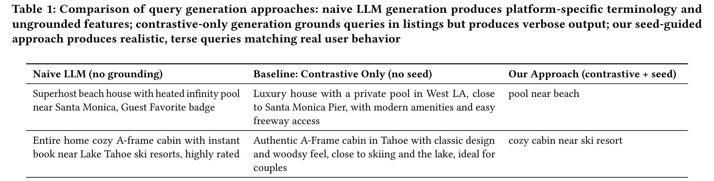
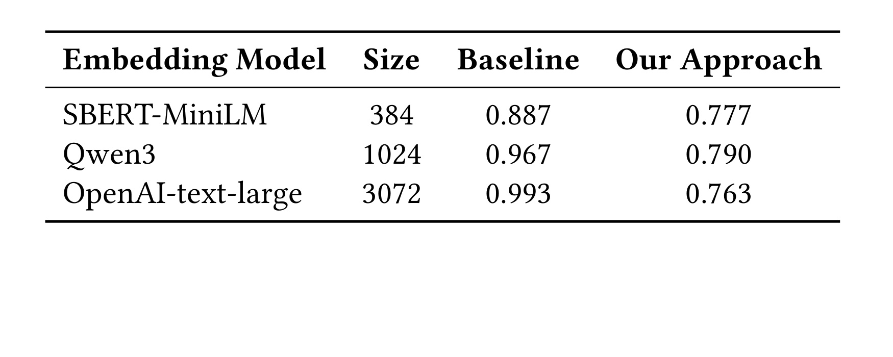

这里重写精读一篇 Airbnb 的工业论文《Bridging the Cold-Start Gap: LLM-Powered Synthetic Data Generation for Natural Language Search at Airbnb》。论文入口：arXiv:2605.21812。作者来自 Airbnb 搜索与推荐相关团队，主题是自然语言搜索上线前没有真实 query、没有人工 relevance label、也没有历史点击时，如何用 LLM 生成可训练、可评估、可逐步过渡到真实流量的数据资产。本轮未核验到独立代码仓库，以下笔记只基于论文 PDF 与 arXiv 信息。
1. 背景和问题
Airbnb 的问题不是“能不能让 LLM 听懂一句自然语言”，而是一个更工程化的冷启动问题：如果自然语言搜索还没有正式放量，就没有真实用户会如何表达住宿意图的分布，也没有 query-listing relevance label 可以训练召回和排序模型。传统平台搜索依赖 destination、dates、guest count、amenities 这类结构化过滤器，优点是字段明确、约束强，缺点是用户很难表达“安静、适合远程办公、亲子友好、离海边近但不要太吵”这种组合意图。自然语言搜索正是为了补上这部分表达空间，但越开放的输入越需要训练数据和评估集，否则模型上线前只能凭少量人工样例判断效果。 论文把问题拆成两个层次。第一层是 query distribution：用户会输入完整句子、短短几个关键词，还是把多个设施偏好压缩成短语？用户研究给出的 seed query 往往比真实流量更像“调查问卷回答”，而上线后的真实 query 可能非常短，例如“pet friendly cabin”。第二层是 label distribution：自然语言 query 与房源之间的相关性不仅是 bookability。用户最终预订与价格、可订日期、图片、评论、个人偏好相关；而冷启动阶段还没有足够 booking 行为可用，因此论文先聚焦 topicality，也就是 query 所陈述的语义需求是否被 listing 满足。这个区分很重要，因为如果把预订概率和语义匹配混在一起，合成数据很容易把价格、转化、库存等线上因素伪装成语言理解能力。 已有冷启动方案各有缺陷。规则排序可以先跑起来，但无法覆盖自然语言的长尾组合；人工标注质量高但成本大，难以每天生成百万级训练样本；直接让 LLM 从房源描述生成 query 又会过长、过书面化，甚至带有平台内部术语。Airbnb 的选择是把 LLM 限制在真实 booking session、listing catalog 和 seed language 共同决定的空间里。也就是说，LLM 负责把结构化差异翻译成用户可能说的话，但正负样本、地理上下文、房源属性和质量检查仍来自平台数据。这样生成的数据不只是“看起来像 query”，还和搜索系统训练所需的 pairwise / ranking 信号相连。 这篇论文对推荐系统也有启发。很多 LLM4Rec 工作容易直接把模型放到排序或回答主路径上，但 Airbnb 这篇更像一个数据基础设施方案：它承认 LLM 最擅长补齐语言表达和合成标签，而不是替代检索排序本身。它还把 cold-to-warm transition 作为设计目标，说明合成数据不是永久真相；一旦有真实 query，seed pool 和生成策略就要被真实流量校准。这个定位比“LLM 生成更多样本”更稳，也更接近真实生产系统需要的闭环。
还有一个容易被忽略的背景是评估集的时间顺序。自然语言搜索上线前，团队不能用未来真实 query 训练模型；上线后，又不能继续只相信早期 synthetic query。论文把 seed query 设计成可替换来源，就是为了让系统能从 survey seed 过渡到 real user seed。这个过程与推荐系统中的冷启动 item 很像：最初只能依赖内容和人工规则，随后逐步接入行为反馈。Airbnb 这里的对象不是 item embedding，而是 query language distribution。若不把这个分布当成一等资产，搜索模型很可能在上线前离线表现不错，上线后却发现用户输入比训练集短得多、含糊得多、也更偏口语。 从业务指标看，topicality 的独立建模还有一个好处：它降低了早期模型被转化噪声误导的风险。预订行为包含价格、地理、可订日期、图片、评论、品牌信任和个人预算，很多因素与自然语言理解无关。冷启动阶段如果直接优化 booking proxy，模型可能学到“便宜房源更好”或“热门城市更好”，却没有学会 query 中的 pool、workspace、pet-friendly、near beach 等语义约束。论文先把语义相关性做扎实，再把 warm-start bookability 作为未来工作，这是一个清晰的系统分层。
补充背景：这篇文章真正要解决的不是“能否让 LLM 生成搜索词”，而是自然语言搜索上线前没有足够真实 query、也没有足够相关性标签的问题。对 Airbnb 这类平台来说，房源标题、描述和结构化属性很多，但用户在搜索框里写的是压缩后的需求，例如“适合家庭、靠海、带厨房”。如果直接让 LLM 根据房源描述自由写 query，结果会更像广告文案；如果只用历史 booking session，又缺少自然语言表达。论文把真实业务结构和 LLM 语言能力拼在一起，这一点比模型选择本身更关键。
2. 方法
2.1 总体管线：先用真实平台结构约束 LLM，再让 LLM 生成语言层信号
论文方法可以概括为三段：从 booking session 中构造 contrastive listing pairs；从用户研究或小流量真实查询中抽取 seed query；把 listing pair、房源属性和 seed language 放入 prompt，让 LLM 生成更偏向正例 listing 的自然语言 query。输出不是单独一条 query，而是带有正负房源的 triplet $(q,l^+,l^-)$，其中 $q$ 是合成查询，$l^+$ 是 booked 或 engaged listing，$l^-$ 是同一 search context 下更少 engagement 的 listing。这个 triplet 后续可以服务 embedding retrieval、pairwise ranking evaluation，也可以作为 topicality training data。 公式清单可以从三个角度理解。第一，triplet 构造是本文所有训练信号的基本单元：$(q,l^+,l^-)$ 中 query 必须同时满足“像用户会写的话”和“更贴近正例”。第二，分布校验使用 KL divergence，形式上可以写成 $D_{KL}(P_{real}\|P_{synthetic})=\sum_i P_{real}(i)\log\frac{P_{real}(i)}{P_{synthetic}(i)}$，这里的 $i$ 可以是 query length bucket 或 attribute type。第三，pairwise accuracy 度量 embedding model 是否能把正例排到负例前面；它不是越高越好，因为如果所有样本都太容易，不同 embedding 模型会同时接近饱和，评估集就失去区分度。论文的核心是把这些公式和指标放在冷启动系统设计里，而不是只当离线表格。
2.2 Contrastive query generation 的输入如何被组织
Algorithm 1 给出 contrastive query generation 的步骤：先从 booking sessions 里抽取 search context，包括 location、dates、guests 等；再选正例房源和负例房源；随后从 listing catalog 中填充 title、description、amenities、reviews 等属性；再采样一个 seed query 作为语言模板；最后让 LLM 在 seed structure、listing attributes 和策略参数的条件下生成 query。这个顺序很关键，因为它先固定了“什么应该被区分”，再让模型决定“如何用自然语言表达这种区分”。如果反过来先让 LLM 自由生成 query，再去找房源匹配，就很容易得到漂亮但无法训练排序器的文本。
正负房源必须来自同一个 search context，这一点减少了捷径。若正例来自热门城市、负例来自完全不同地点，模型只要捕捉地名就能区分，不会学到设施、氛围、适配场景等细粒度 topicality。论文选择 booked/engaged listing 作为正例、同上下文低 engagement listing 作为负例，是为了让 query 更像真实搜索中的比较问题：用户并不是在全平台随机挑房，而是在同一目的地和同一时间窗口中做选择。这样构造出的合成查询才能服务排序和 re-ranking，而不是只服务粗召回。
2.3 三种 prompt 变体：在 template fidelity 与 diversity 之间取舍
论文设计 seed_controlled、seed_freeform 和 variety 三种 query generation mode。seed_controlled 更接近模板复写，保留 seed query 的结构和属性位置，适合早期需要强稳定性的训练数据；seed_freeform 把 seed query 当 few-shot 示例，让模型学习风格但可以改变结构；variety 只给高层 guideline，追求更高表达多样性。三者的关系不是谁绝对更好，而是对应 cold-to-warm 的不同阶段。冷启动最早期，系统需要贴近可解释样例；随着真实 query 累积，模型可以更多学习真实表达，并扩大 diversity。

Figure 2 对同一 listing 展示了 baseline、seed query 和本文 seed-guided output 的差异。baseline 生成的 query 往往把 listing description 中多个属性堆成长句，像“带 outdoor seating、Wi-Fi、near boardwalk”的说明文；seed query 则更短、更像用户搜索框里的需求；ours with seed 在二者之间取得平衡：保留“romantic escape”“Wi-Fi”“outdoor space”“near beach”等关键信息，但不会把整段房源描述搬进 query。这个例子说明 seed 的作用不是限制模型只能复制，而是给模型一个“用户会如何省略和组合属性”的语言先验。对于搜索训练来说，这比生成完整营销文案重要得多，因为线上 query 通常短、模糊、属性密集，而且不会使用平台内部字段名。
2.4 Synthetic label generation：contrastive labels 与 Virtual Judge 的分工
论文的 label generation 分两类。Contrastive generation 本身生成 triplet，因此可以把 $l^+$ 和 $l^-$ 的 topicality 关系视为由构造过程给出的 label。它的优点是非常便宜、规模化、和正负样本绑定紧；缺点是覆盖范围受 booking pairs 和 prompt 策略限制。Virtual Judge 则让 LLM 判断 arbitrary query-listing pair 的相关性，可覆盖更多 query/listing 组合，适合构建更一般的评估集或补充标签。但 VJ 也有风险：如果生成 query 的 LLM 和判断 relevance 的 LLM 同源，可能出现 self-preference；如果 listing features 提供不全，VJ 会把缺失信息当成不相关。 因此本文不是把 LLM judge 当唯一真相，而是用 attribute grounding、consistency checks、deduplication、blocklist 和 hard negative mining 控制质量。hard negative 的价值在于制造足够接近的负例，避免训练集只包含一眼能分开的 pair。对于 embedding retrieval，简单样本会导致所有模型都高分；对于 ranking evaluation，困难样本才能暴露模型对 amenities、location nuance、review signal、style preference 的理解差异。这也是为什么论文关注“样本更难”而不是“模型在合成样本上准确率更高”。
2.5 冷启动到暖启动：合成数据要被真实流量校准
这套框架最工程化的部分是 daily synthetic pipeline。系统可以在没有真实 query 时先用 user research seed queries；上线后，再把小流量真实 query 加入 seed pool，逐步修正 query length、attribute distribution 和词汇风格。论文明确观察到真实用户比 survey respondents 更短、更直接，这意味着冷启动阶段的 synthetic data 如果不更新，会很快偏离真实输入分布。换句话说，合成数据是一座桥，不是固定数据集。 这一点对推荐和搜索团队尤其重要。很多合成数据方案在论文里只报告一次性离线指标，但生产中 query distribution 会随入口、提示文案、季节、城市、用户群和模型能力变化。Airbnb 的方法把生成数据当成可刷新资产：每天根据当前 seed、catalog 和 session 生成新样本；每次上线后再拿真实 query 反推分布差距。只有这样，LLM 合成才能持续服务召回、排序和评估，而不是成为一次性的 benchmark。
2.6 Quality checks 不是附属步骤
论文提到 consistency checks、deduplication 和 blocklist，这些步骤在工业合成数据里不是可有可无的清洗。LLM 生成 query 时可能重复同一属性、引入不存在的设施、使用内部字段名，或者把负例房源的特征也写入查询。Deduplication 避免训练集被少数模板主导；blocklist 防止平台不希望出现的词汇进入训练；consistency checks 则要求 query 与正例 listing 的属性关系可解释。若缺少这些检查，合成数据规模越大，噪声也会越系统化，后续模型可能把 LLM 的语言偏差当成用户偏好。
2.7 Prompt 策略如何影响训练用途
seed_controlled 更适合构造高精度评估样本，因为它保留 seed structure，可解释性强；seed_freeform 更适合扩充训练样本，因为它在保持风格的同时增加表达变化；variety 适合探索长尾意图，但需要更严格的过滤。三种模式可以对应不同表：评估集需要稳定，训练集需要覆盖，压力测试集需要长尾。把这三者混为一个池会让指标难解释：模型在 variety 样本上差，可能是模型弱，也可能是样本偏离真实用户。
2.8 Pairwise 与 pointwise 标签的差异
Contrastive triplet 给出的天然是 pairwise 信号：对于 query $q$，$l^+$ 应该比 $l^-$ 更相关。Virtual Judge 更容易生成 pointwise label，例如某个 query-listing pair 是否相关、相关程度几分。排序模型训练通常需要二者结合：pairwise 更贴近相对排序，pointwise 更容易覆盖广泛候选。Airbnb 的方法把 pairwise 作为高置信骨架，再用 VJ 扩展覆盖，这比完全依赖 LLM 打分更稳。实际落地时，可以把 pairwise triplet 用于 embedding model hard evaluation，把 VJ label 用于 broader recall coverage。
2.9 Hard negative mining 的必要性
如果负例与正例差异太大，模型只需要抓地名、价格或明显设施就能做对，这种训练不会提升自然语言搜索。Hard negative 应该满足“同一目的地、同一日期、相似价格或相似房型，但缺少 query 中关键属性”。例如 query 是“quiet cabin with hot tub for remote work”，负例最好也是 cabin，也有 Wi-Fi，但缺 hot tub 或评论显示噪声大。这样的负例才能迫使 embedding/ranking model 学到组合属性，而不是浅层关键词。
2.10 和线上排序的接口
这套 synthetic data 最自然的落点是召回和语义粗排，而不是最终排序。召回层需要把自然语言 query 映射到候选房源；粗排需要快速判断 topicality；最终排序仍要融合价格、转化、库存、个性化和业务规则。因此论文的 triplet、VJ label、query distribution 指标最好作为 early-stage semantic layer 的训练和评估资产。上线后，可以用真实点击和预订数据校准 bookability，但不要让 bookability 反过来污染 topicality 数据集。
2.11 复现时的最小数据结构
一个可复现实验至少需要四张表：listing catalog，包含结构化设施、描述、位置、评论摘要；session table，包含 search context、engagement 和 booking；seed query table，包含文本、来源和属性标注；synthetic triplet table，包含 query、positive listing、negative listing、generation mode、quality flags。没有这些字段，很多论文指标无法解释。例如只保存生成 query 而不保存 listing pair，就无法回溯某个 query 为什么应该偏向正例。
2.12 失败模式
方法可能失败在三处。第一，seed query 本身偏差很大，导致所有 synthetic query 过于调查问卷化。第二，LLM 过度利用房源描述，生成用户不会输入的营销句。第三，正负样本采样混入 bookability 噪声，例如正例只是更便宜或更热门，而不是更 topical。应对方式分别是加入真实小流量 seed、限制 query 长度和用户口吻、以及对正负样本差异做属性审计。
2.13 数据闭环和版本控制
这套方法要进入生产，必须把每条 synthetic query 的来源、prompt 版本、seed query、正负房源、房源快照和质量标记都记录下来。否则一旦 embedding model 在评估集上波动，团队无法判断是模型变化、房源文本变化、seed query 分布变化，还是生成 prompt 改了。冷启动阶段尤其需要版本控制：合成数据不是一次性资产，而是随真实 query 回流不断校准的训练池。
复现时我会把 triplet table 做成可审计格式：query_id、generation_mode、positive_listing_id、negative_listing_id、search_context_id、seed_query_id、prompt_hash、quality_flags、created_at。这些字段看起来偏工程，但它们决定论文方法是否能被持续迭代。没有这些字段，所谓“LLM 生成训练数据”会退化成不可追踪的一批文本。
2.14 评估集应该保持困难而不是追求高分
Table 5 中强 embedding model 在本文样本上准确率下降，是一个容易误读的点。对冷启动评估集来说，所有模型都接近满分反而是坏事，因为它无法指导模型选择。Airbnb 的做法本质上是在构造 hard pair：正负房源共享 search context，差异集中在少数 topical attributes。这样的样本更能检验模型是否真的理解用户语言和房源属性的对应关系。
这也给其他搜索/推荐业务一个原则：合成评估集不应只追求“看起来正确”，还要控制难度。可以用不同 embedding backbone 的分数分布做 sanity check。如果弱模型和强模型都拿到同样高分，说明样本太浅；如果强模型也接近随机，说明样本可能过噪。一个可用评估集应该让模型之间有可解释的梯度。
2.15 和最终排序模型的边界
本文反复区分 topicality 和 bookability，这是方法边界。Synthetic query-triplet 能训练语义相关性，但不能替代价格、库存、地理距离、取消政策、个性化偏好和转化率模型。更合理的线上接口是把语义模型作为召回或粗排特征，再把真实行为模型放到后续排序层。若把合成 topicality label 直接当成最终转化标签，会把“用户想找什么”和“用户最终会订什么”混在一起。
因此我更倾向于把本文方法理解为自然语言搜索入口的 bootstrapping layer。它先提供一个能读懂用户短 query 的候选生成器，等真实 query、点击和预订积累后，再用线上行为校准 bookability。这个分层能降低冷启动风险，也能避免 LLM 合成标签长期主导最终业务目标。
3. 实验结果
3.1 实验要证明什么
这篇论文的实验目标不是证明某个 LLM 本身更强，而是证明生成数据是否满足三个条件：语言分布接近真实用户；样本难度能区分检索模型；训练/评估信号能进入生产管线。相应地，论文没有只给一个 ranking accuracy，而是同时看 query length distribution、attribute type KL divergence、embedding retrieval pairwise accuracy、ranking accuracy 等指标。这样的实验结构比单纯展示“模型在合成集上得分高”更合理，因为冷启动数据最怕两个极端：一种是太像 LLM 生成的长描述，另一种是太容易，导致模型评估失真。

Table 1 把 naive LLM generation、baseline contrastive-only 和本文 contrastive + seed 放在一起比较。naive 方法容易出现平台术语或房源营销式句子，baseline 虽然已经利用正负 listing 差异，但仍然偏长、偏说明文；本文方法借助 seed query 把表达拉回真实搜索框风格。这个表的价值不在于某个例子好看，而在于它说明 prompt 设计要同时包含内容约束和语言约束：listing pair 负责告诉模型“应该区分什么”，seed 负责告诉模型“用户通常怎么说”。如果缺少前者，query 会空泛；如果缺少后者，query 会像房源描述摘要。
这段图表解读还应和 Airbnb 的冷启动设定一起看：它不是展示孤立示例，而是在说明 seed、正负房源和难样本如何共同约束合成 query，避免训练集退化成房源描述摘要。### 3.2 分布指标：KL divergence 的解释
论文报告 baseline query length 相对真实用户的 KL divergence 为 4.95，而 seed-guided approach 为 0.66，约 7.5 倍改善。Attribute type distribution 上，本文方法达到 0.04，低于 seed queries 的 0.09。这两个数字说明 seed guidance 不是简单复制 seed，而是把 seed 的表达习惯和 listing pair 的属性差异组合起来：长度像用户，属性覆盖又比原 seed 更贴近需要训练的场景。这里的 KL divergence 应该读作分布距离，不是绝对质量分数；它越低，表示合成 query 在对应统计维度上越接近真实或目标分布。 要注意，KL 只能覆盖被显式统计的维度。query length、attribute type 能说明“形式”更接近真实用户，但不能完全证明语义自然、没有隐性偏见或能带来线上收益。因此论文又引入 retrieval/ranking evaluation 来检查这些样本对模型是否有区分度。这个设计顺序合理：先确认合成查询不像 LLM 长文，再确认它不是模型一眼能做对的简单题。
3.3 难度指标：为什么准确率下降反而是好信号

Table 5 展示三种 embedding model 在 baseline 与本文样本上的 pairwise accuracy。SBERT-MiniLM 从 0.887 降到 0.777，Qwen3 从 0.967 降到 0.790，OpenAI-text-large 从 0.993 降到 0.763。表面看本文样本让准确率下降，但这正是作者想要的效果：baseline 太容易，强弱模型都接近饱和，无法提供模型选择和迭代信号；本文样本更接近真实搜索中的难比较场景，因此不同模型会拉开差距。对工程评估集来说，区分度比高分更重要。
这段图表解读还应和 Airbnb 的冷启动设定一起看：它不是展示孤立示例，而是在说明 seed、正负房源和难样本如何共同约束合成 query，避免训练集退化成房源描述摘要。### 3.4 结果边界
这些实验足以支持“LLM 合成数据可以帮助自然语言搜索冷启动”这一方向，但不能直接证明它已经优化了最终 booking conversion。论文自己也把 topicality 与 bookability 分开，说明当前工作主要服务语义匹配基础，而不是最终转化排序。外部团队复用时要特别注意：如果平台的用户行为主要受价格、供给、社交关系或时效影响，单纯使用 topicality triplet 可能不足以训练最终排序器。更稳妥的落地方式是把该方法作为召回/粗排和评估集冷启动，再在真实流量出现后引入点击、停留、购买或预订行为做 warm-start adaptation。
3.5 对生产团队最有用的读法
我会把实验结果读成三个 gating check。第一，synthetic query 是否像真实 query；若 KL divergence 太高，先不要训练模型，因为模型会学习错误输入分布。第二，synthetic pair 是否够难；若所有 embedding model 都接近满分，评估集无法指导模型选择。第三，样本是否可日更；如果生成和过滤流程太依赖人工，冷启动桥梁无法随着真实 query 回流而更新。Airbnb 的实验覆盖了前两点，并说明有 production pipelines 日更，第三点虽然未给出全部实现，但方向明确。 另一个值得注意的结果是 OpenAI-text-large 在 baseline 上几乎饱和，在本文样本上明显下降。这并不是说强模型变差，而是说明 baseline 题目太简单。工业评估经常出现这种情况：一个简单 benchmark 让所有模型都高分，团队误以为没有优化空间；换成 hard negatives 后，模型差异才显现。自然语言搜索冷启动尤其需要这种“难但可信”的评估集，否则上线前很难发现模型对组合属性、隐含约束和细粒度场景的理解不足。
3.6 复现实验检查清单
复现这篇论文时，第一组检查是分布检查：query length、属性类型、位置/设施/人群需求占比是否接近真实或人工 seed。第二组检查是难度检查：不同 embedding model 的 pairwise accuracy 是否拉开，而不是全体饱和。第三组检查是可维护性：新增房源或入口变化后，生成流程能否自动重跑，并保留 prompt 版本和质量标记。三组检查缺一不可。
还要避免把 Virtual Judge 当作最终真值。VJ 可以补充 pointwise label，但它本身可能偏好更流畅、更完整或更像房源描述的 query。对于搜索系统，用户 query 往往短且不完整，过度流畅反而可能是分布偏移。因此 VJ 结果最好和少量人工标注、真实点击回放一起看，作为弱标签而不是唯一判官。
3.7 外推到其他推荐场景
如果把方法迁移到电商、短视频或广告，正负样本的构造会更难。Airbnb 的同一 search context 能天然形成可比房源，但内容推荐里的曝光和点击受到位置偏差、社交关系、时效和创作者影响。迁移时需要先找一个足够干净的“同上下文比较单元”，例如同 query 下的商品、同用户会话内的候选、同广告请求内的曝光集合。没有这个比较单元，contrastive generation 容易把业务噪声写进 query。
4. 总结
4.1 我的判断
这篇论文的价值在于它把 LLM 放在数据生产和评估入口，而不是直接替代搜索排序。它承认自然语言搜索上线前最缺的是 query distribution 和 topicality label，因此把 LLM 约束在 listing pair、seed language 和 quality checks 之内。相比“让大模型理解用户意图”的泛泛说法，这种设计更可控，也更容易接入现有 retrieval/ranking pipeline。
4.2 工程启发与复现建议
复现时建议先做三个最小闭环：第一，准备一批同上下文正负 item pair；第二，准备少量真实或人工 seed queries；第三，评估 query length KL、attribute KL 和 pairwise retrieval accuracy。不要一开始就追求线上全量排序替换。若平台已有人工 query 样本，可以把 seed_controlled、seed_freeform、variety 三种模式分别生成样本，并观察哪一种最接近真实 query，同时又能制造足够难的 negative pair。
4.3 局限与后续跟进
局限至少有四点：一是 topicality 不等于 bookability，最终转化排序仍需要真实行为；二是 Virtual Judge 可能带来 LLM 偏好和同源评估偏差；三是 seed query 会随入口和用户教育变化，需要持续刷新；四是论文没有公开完整生产实现和业务指标，外部复现只能验证方法思想。后续应重点跟踪真实 query 回流后 synthetic distribution 如何校准、VJ 与人工标注的一致性、合成样本对不同 embedding backbone 的迁移性，以及这种方法能否用于广告 query、商品搜索或短视频内容检索。
4.4 我会如何落地
若在另一个平台落地，我会先用 200-500 条真实或人工 seed query 建语言风格样本，再从历史 session 中抽同上下文正负 item pair，先用 seed_controlled 生成高置信评估集，再用 seed_freeform 扩充训练集。每次生成都记录 query length、属性类型、正负差异、LLM prompt 版本和质量检查结果。上线后，把真实 query 按周回流到 seed pool，并用 KL divergence 监控 synthetic distribution 是否仍贴近真实用户。
4.5 最需要跟踪的问题
后续最值得跟踪的是 topicality-trained model 如何过渡到 bookability ranking。一个合理方案是先保持 topicality model 作为语义特征，再在最终排序中与价格、库存、转化模型融合；另一方案是用真实行为蒸馏或微调 synthetic-trained model。无论哪种，都要避免把早期合成标签当成永久 ground truth。